Chapter 6 Regression Diagnostics
Some of this discussion comes from Bock, Velleman, and De Veaux (2004).
Multiple linear regression (also called ordinary least squares, or OLS) has four main assumptions that are derived from its model.
For a simple regression, the model underlying the regression line is \(E(Y) = \beta_0 + \beta_1 x\)
- where E(Y) = the expectation (mean) of the outcome Y,
- \(\beta_0\) is the intercept, and
- \(\beta_1\) is the slope
Now, if we have a multiple regression with three predictors \(x_1, x_2\) and \(x_3\), as we do in the hydrate case (dose, age and height), then the model becomes \(E(Y) = \beta_0 + \beta_1 x_1 + \beta_2 x_2 + \beta_3 x_3\).
- As the simple regression model did, the multiple regression model predicts the mean of our outcome, for a subject (or group of subjects) with specific values of the predictors.
- In the
hydrateexample, our model is E(‘recov.score’) = \(\beta_0 + \beta_{dose}\)dose+ \(\beta_{age}\)age+ \(\beta_{weight}\)weight- In a larger version of this study, we can imagine finding many kids with the same
ageandweightreceiving the samedose, but they won’t all have exactly the samerecov.score. - Instead, we’d have many different recovery score values.
- It is the mean of that distribution of recovery scores that the regression model predicts.
- In a larger version of this study, we can imagine finding many kids with the same
Alternatively, we can write the model to relate individual y’s to the x’s by adding an individual error term: \(y = \beta_0 + \beta_1 x_1 + \beta_2 x_2 + \beta_3 x_3 + \epsilon\)
Of course, the multiple regression model is not limited to three predictors. We will often use k to represent the number of coefficients (slopes plus intercept) in the model, and will also use p to represent the number of predictors (usually p = k - 1).
6.1 The Four Key Regression Assumptions
The assumptions and conditions for a multiple regression model are nearly the same as those for simple regression. The key assumptions that must be checked in a multiple regression model are:
- Linearity Assumption
- Independence Assumption
- Equal Variance (Constant Variance / Homoscedasticity) Assumption
- Normality Assumption
Happily, R is well suited to provide us with multiple diagnostic tools to generate plots and other summaries that will let us look more closely at each of these assumptions.
6.2 The Linearity Assumption
We are fitting a linear model.
- By linear, we mean that each predictor value, x, appears simply multiplied by its coefficient and added to the model.
- No x appears in an exponent or some other more complicated function.
- If the regression model is true, then the outcome y is linearly related to each of the x’s.
Unfortunately, assuming the model is true is not sufficient to prove that the linear model fits, so we check what Bock, Velleman, and De Veaux (2004) call the “Straight Enough Condition”
6.2.1 Initial Scatterplots for the “Straight Enough” Condition
- Scatterplots of y against each of the predictors are reasonably straight.
- The scatterplots need not show a strong (or any!) slope; we just check that there isn’t a bend or other nonlinearity.
- Any substantial curve is indicative of a potential problem.
- Modest bends are not usually worthy of serious attention.
For example, in the hydrate data, here are the relevant scatterplots (in practice, I would simply look at the scatterplot matrix produced earlier.)
`geom_smooth()` using formula 'y ~ x'
`geom_smooth()` using formula 'y ~ x'
`geom_smooth()` using formula 'y ~ x'
`geom_smooth()` using formula 'y ~ x'
`geom_smooth()` using formula 'y ~ x'
`geom_smooth()` using formula 'y ~ x'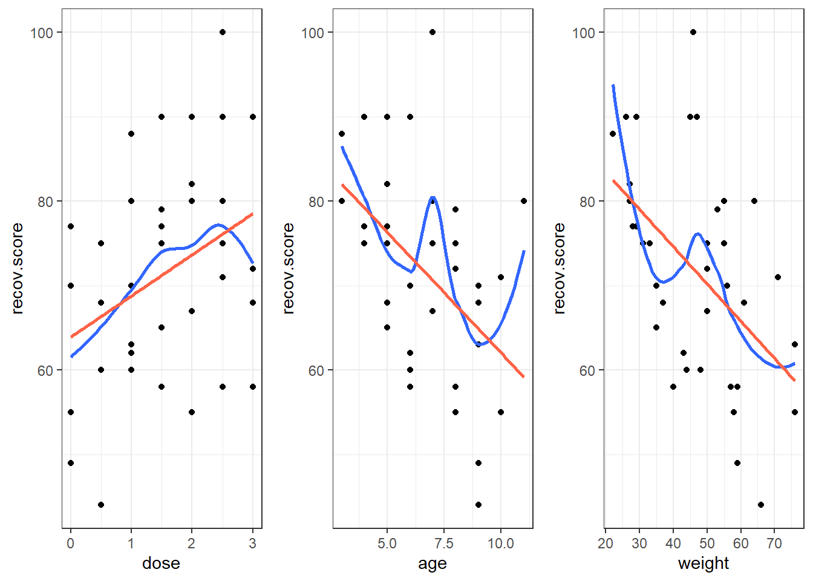
Here, I’ve simply placed recov.score on the vertical (Y) axis, plotted against each of the predictors, in turn. I’ve added a straight line (OLS) fit [in tomato red] and a loess smooth [in blue] to each plot to guide your assessment of the “straight enough” condition.
- Each of these is “straight enough” for our purposes, in initially fitting the data.
- If one of these was not, we might consider a transformation of the relevant predictor, or, if all were problematic, we might transform the outcome Y.
6.2.2 Residuals vs. Predicted Values to Check for Non-Linearity
The residuals should appear to have no pattern (no curve, for instance) with respect to the predicted (fitted) values. It is a very good idea to plot the residuals against the fitted values to check for patterns, especially bends or other indications of non-linearity. For a multiple regression, the fitted values are a combination of the x’s given by the regression equation, so they combine the effects of the x’s in a way that makes sense for our particular regression model. That makes them a good choice to plot against. We’ll check for other things in this plot, as well.
When you ask R to plot the result of a linear model, it will produce up to five separate plots: the first of which is a plot of residuals vs. fitted values. To obtain this plot for the model including dose, age and weight that predicts recov.score, we indicate plot 1 using the which command within the plot function:
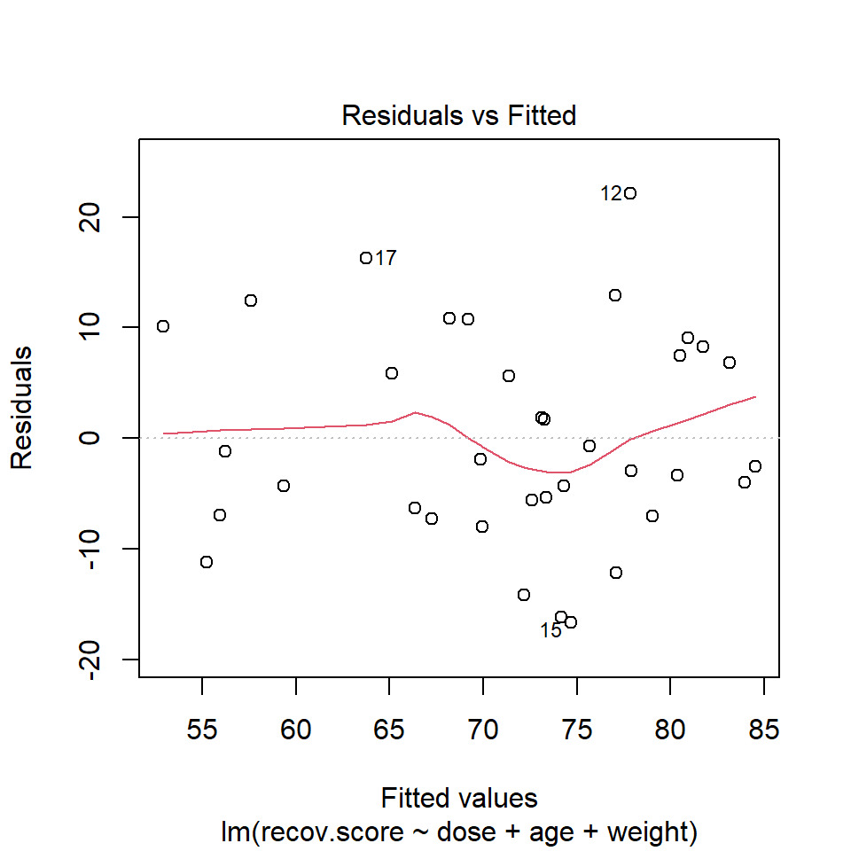
The loess smooth is again added to help you identify serious non-linearity. In this case, I would conclude that there were no serious problems with linearity in these data.
The plot also, by default, identifies the three values with the largest (in absolute value) residuals.
- Here, these are rows 12, 15 and 17, where 12 and 17 have positive residuals (i.e. they represent under-predictions by the model) and 15 has a negative residual (i.e. it represents a situation where the prediction was larger than the observed recovery score.)
6.2.3 Residuals vs. Predictors To Further Check for Non-Linearity
If we do see evidence of non-linearity in the plot of residuals against fitted values, I usually then proceed to look at residual plots against each of the individual predictors, in turn, to try to identify the specific predictor (or predictors) where we may need to use a transformation.
The appeal of such plots (as compared to the initial scatterplots we looked at of the outcome against each predictor) is that they eliminate the distraction of the linear fit, and let us look more closely at the non-linear part of the relationship between the outcome and the predictor.
Although I don’t think you need them here, here are these plots for the residuals from this model.
hydrate$recov.res <- residuals(lm(recov.score ~ dose + age + weight, data = hydrate))
p1 <- ggplot(hydrate, aes(x = dose, y = recov.res)) +
geom_point() + geom_smooth(method = "loess", se = FALSE) +
geom_smooth(method = "lm", se = FALSE, col = "tomato")
p2 <- ggplot(hydrate, aes(x = age, y = recov.res)) +
geom_point() + geom_smooth(method = "loess", se = FALSE) +
geom_smooth(method = "lm", se = FALSE, col = "tomato")
p3 <- ggplot(hydrate, aes(x = weight, y = recov.res)) +
geom_point() + geom_smooth(method = "loess", se = FALSE) +
geom_smooth(method = "lm", se = FALSE, col = "tomato")
gridExtra::grid.arrange(p1, p2, p3, nrow=1)`geom_smooth()` using formula 'y ~ x'
`geom_smooth()` using formula 'y ~ x'
`geom_smooth()` using formula 'y ~ x'
`geom_smooth()` using formula 'y ~ x'
`geom_smooth()` using formula 'y ~ x'
`geom_smooth()` using formula 'y ~ x'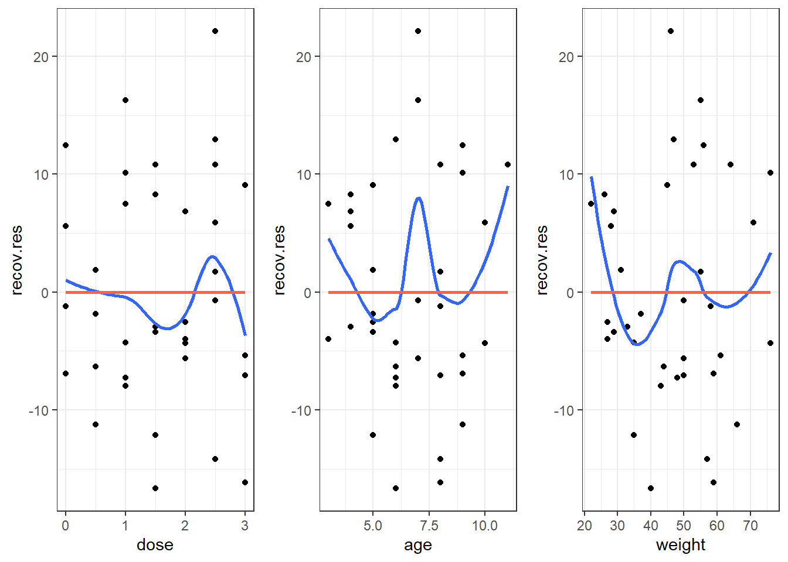
Again, I see no particularly problematic issues in the scatterplot here. The curve in the age plot is a bit worrisome, but it still seems pretty modest, with the few values of 3 and 11 for age driving most of the “curved” pattern we see: there’s no major issue. If we’re willing to assume that the multiple regression model is correct in terms of its specification of a linear model, we can move on to assessing other assumptions and conditions.
6.3 The Independence Assumption
The errors in the true underlying regression model must be mutually independent, but there is no way to be sure that the independence assumption is true. Fortunately, although there can be many predictor variables, there is only one outcome variable and only one set of errors. The independence assumption concerns the errors, so we check the residuals.
Randomization condition. The data should arise from a random sample, or from a randomized experiment.
- The residuals should appear to be randomly scattered and show no patterns, trends or clumps when plotted against the predicted values.
- In the special case when an x-variable is related to time, make sure that the residuals do not have a pattern when plotted against time.
6.3.1 Residuals vs. Fitted Values to Check for Dependence
The hydrate children were not related in any way and were randomly assigned to dosages, so we can be pretty sure that their measurements are independent. The residuals vs. fitted values plot shows no clear trend, cycle or pattern which concerns us.
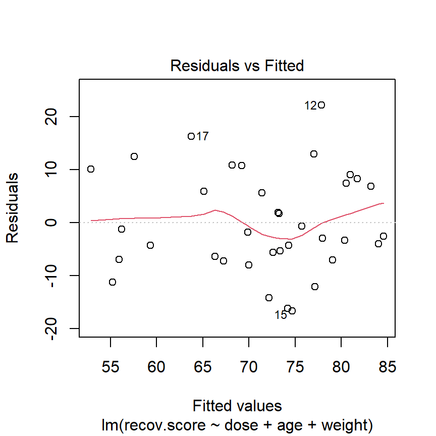
6.4 The Constant Variance Assumption
The variability of our outcome, y, should be about the same for all values of every predictor x. Of course, we can’t check every combination of x values, so we look at scatterplots and check to see if the plot shows a “fan” shape - in essence, the Does the plot thicken? Condition.
- Scatterplots of residuals against each x or against the predicted values, offer a visual check.
- Be alert for a “fan” or a “funnel” shape showing growing/shrinking variability in one part of the plot.
Reviewing the same plots we have previously seen, I can find no evidence of substantial “plot thickening” in either the plot of residuals vs. fitted values or in any of the plots of the residuals against each predictor separately.
6.4.1 The Scale-Location Plot to Check for Non-Constant Variance
R does provide an additional plot to help assess this issue as linear model diagnostic plot 3. This one looks at the square root of the standardized residual plotted against the fitted values. You want the loess smooth in this plot to be flat, rather than sloped.
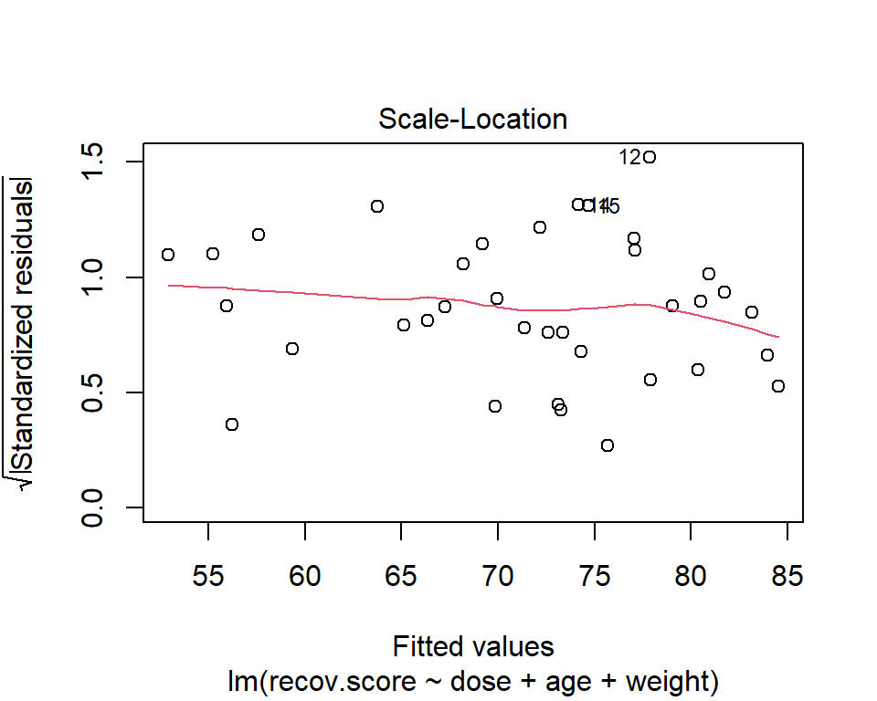
6.4.2 Assessing the Equal Variances Assumption
It’s helpful to see how this works in practice. Here are three sets of plots for two settings, where the left plots in each pair show simulated data that are homoscedastic (variance is constant across the levels of the predictor) and the right plots show data that are heteroscedastic (variance is not constant across predictor levels.)
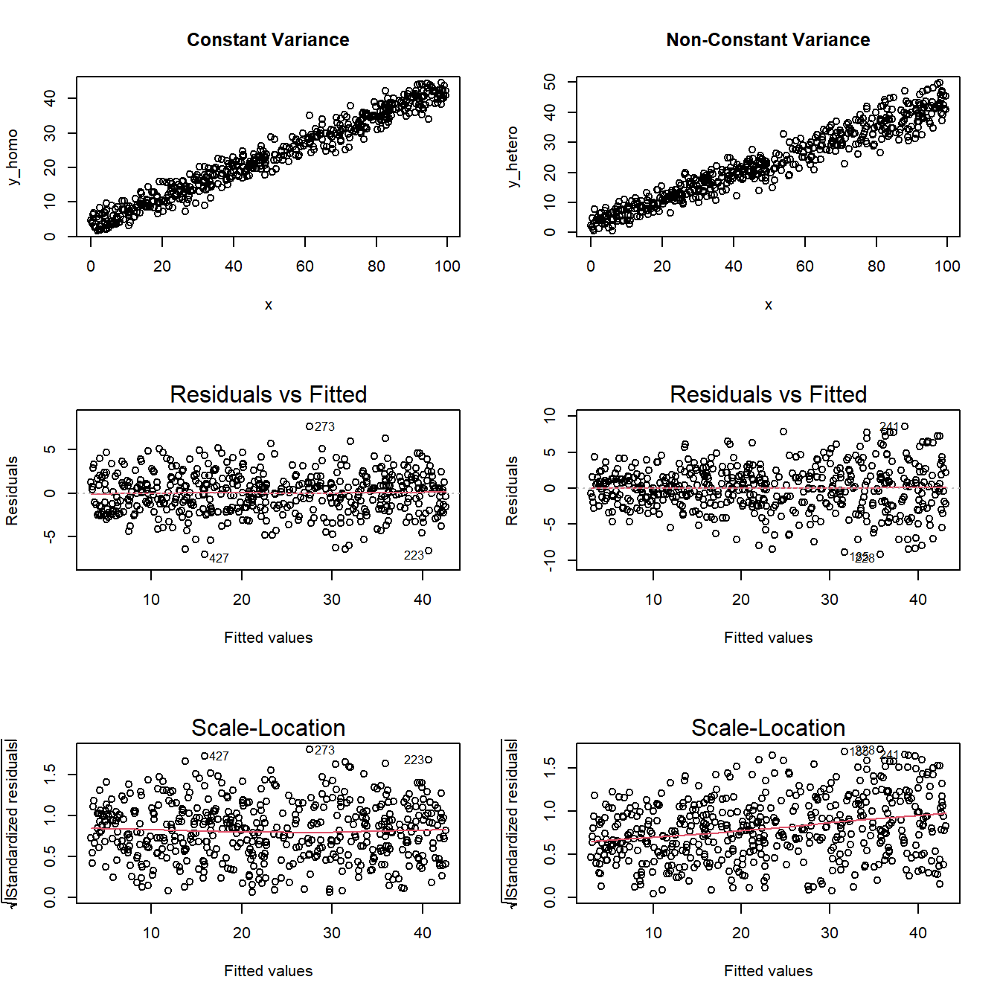
Note the funnel shape for the upper two heteroscedastic plots, and the upward sloping loess line in the last one. Source: http://goo.gl/weMI0U [from stats.stackexchange.com]
6.5 The Normality Assumption
If the plot is straight enough, the data are independent, and the plots don’t thicken, you can now move on to the final assumption, that of Normality.
We assume that the errors around the idealized regression model at any specified values of the x-variables follow a Normal model. We need this assumption so that we can use a Student’s t-model for inference. As with other times when we’ve used Student’s t, we’ll settle for the residuals satisfying the Nearly Normal condition. To assess this, we simply look at a histogram or Normal probability plot of the residuals. Note that the Normality Assumption also becomes less important as the sample size grows.
6.6 Outlier Diagnostics: Points with Unusual Residuals
A multiple regression model will always have a point which displays the most unusual residual (that is, the residual furthest from zero in either a positive or negative direction.) As part of our assessment of the normality assumption, we will often try to decide whether the residuals follow a Normal distribution by creating a Q-Q plot of standardized residuals.
6.6.1 Standardized Residuals
Standardized residuals are scaled to have mean zero and a constant standard deviation of 1, as a result of dividing the original (raw) residuals by an estimate of the standard deviation that uses all of the data in the data set.
The rstandard function, when applied to a linear regression model, will generate the standardized residuals, should we want to build a histogram or other plot of the standardized residuals.
If multiple regression assumptions hold, then the standardized residuals (in addition to following a Normal distribution in general) will also have mean zero and standard deviation 1, with approximately 95% of values between -2 and +2, and approximately 99.74% of values between -3 and +3.
A natural check, therefore, will be to identify the most extreme/unusual standardized residual in our data set, and see whether its value is within the general bounds implied by the Empirical Rule associated with the Normal distribution. If, for instance, we see a standardized residual below -3 or above +3, this is likely to be a very poorly fit point (we would expect to see a point like this about 2.6 times for every 1,000 observations.)
A very poorly fitting point, especially if it also has high influence on the model (a concept we’ll discuss shortly), may be sufficiently different from the rest of the points in the data set to merit its removal before modeling. If we did remove such a point, we’d have to have a good reason for this exclusion, and include that explanation in our report.
R’s general plot set for a linear model includes (as plot 2) a Normal Q-Q plot of the standardized residuals from the model.
6.6.2 Checking the Normality Assumption with a Plot
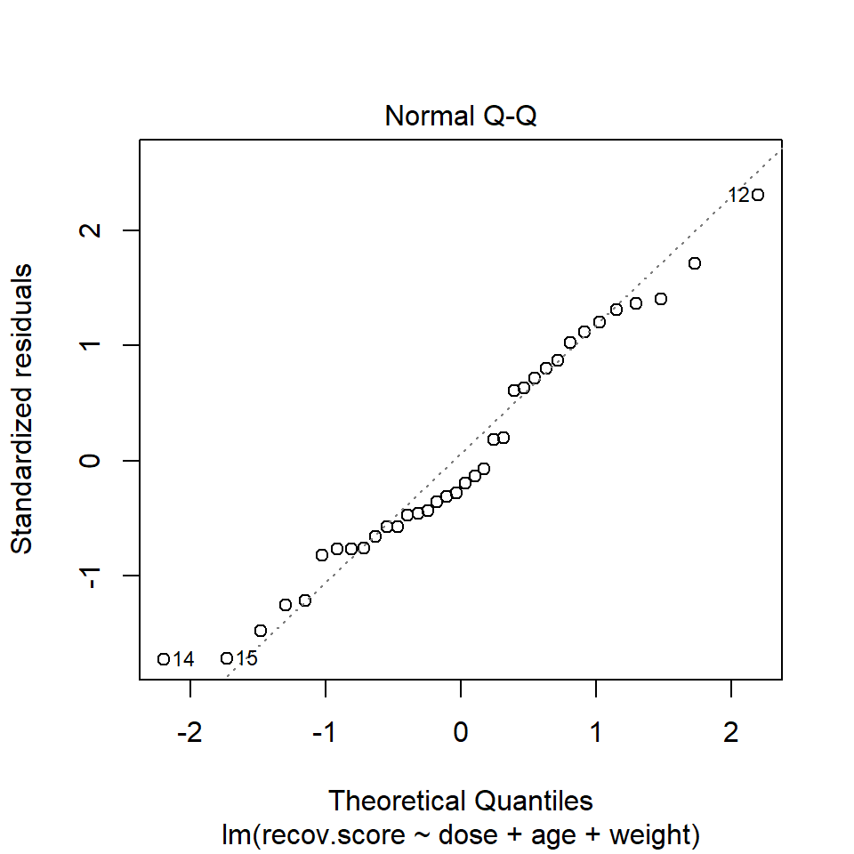
In the hydrate data, consider our full model with all three predictors. The Q-Q plot of standardized residuals shows the most extreme three cases are in rows 12, 14 and 15. We see from the vertical axis here that none of these points are as large as 3 in absolute value, and only row 12 appears to be above +2 in absolute value.
6.6.3 Assessing the Size of the Standardized Residuals
I’ll begin by once again placing the details of my linear model into a variable called modela. Next, I’ll extract, round (to two decimal places) and then sort (from lowest to highest) the standardized residuals from modela.
14 15 30 2 19 20 9 10 21 33 11 25 18
-1.73 -1.71 -1.48 -1.25 -1.21 -0.82 -0.77 -0.77 -0.76 -0.66 -0.58 -0.58 -0.47
7 28 23 13 6 32 16 22 3 5 1 26 36
-0.46 -0.44 -0.36 -0.31 -0.28 -0.20 -0.13 -0.07 0.18 0.20 0.61 0.63 0.72
31 27 34 35 4 24 8 29 17 12
0.80 0.87 1.02 1.12 1.20 1.31 1.36 1.40 1.71 2.31 We can see that the smallest residual is -1.73 (in row 14) and the largest is 2.31 (in row 12). Another option would be to look at these rows in terms of the absolute value of their standardized residuals…
22 16 3 5 32 6 13 23 28 7 18 11 25 1 26 33
0.07 0.13 0.18 0.20 0.20 0.28 0.31 0.36 0.44 0.46 0.47 0.58 0.58 0.61 0.63 0.66
36 21 9 10 31 20 27 34 35 4 19 2 24 8 29 30
0.72 0.76 0.77 0.77 0.80 0.82 0.87 1.02 1.12 1.20 1.21 1.25 1.31 1.36 1.40 1.48
15 17 14 12
1.71 1.71 1.73 2.31 6.6.4 Assessing Standardized Residuals with an Outlier Test
Is a standardized residual of 2.31 particularly unusual in a sample of 36 observations from a Normal distribution, supposedly with mean 0 and standard deviation 1?
No. The car library has a test called outlierTest which can be applied to a linear model to see if the most unusual studentized residual in absolute value is a surprise given the sample size (the studentized residual is very similar to the standardized residual - it simply uses a different estimate for the standard deviation for every point, in each case excluding the point it is currently studying)
No Studentized residuals with Bonferroni p < 0.05
Largest |rstudent|:
rstudent unadjusted p-value Bonferroni p
12 2.488182 0.018422 0.66318Our conclusion is that there’s no serious problem with normality in this case, and no outliers with studentized (or for that matter, standardized) residuals outside the range we might reasonably expect given a Normal distribution of errors and 36 observations.
6.7 Outlier Diagnostics: Identifying Points with Unusually High Leverage
An observation can be an outlier not just in terms of having an unusual residual, but also in terms of having an unusual combination of predictor values. Such an observation is described as having high leverage in a data set.
- R will calculate leverage for the points included in a regression model using the
hatvaluesfunction as applied to the model. - The average leverage value is equal to k/n, where n is the number of observations included in the regression model, and k is the number of coefficients (slopes + intercept).
- Any point with a leverage value greater than 2.5 times the average leverage of a point in the data set is one that should be investigated closely.
For instance, in the hydrate data, we have 36 observations, so the average leverage will be 4/36 = 0.111 and a high leverage point would have leverage \(\geq\) 10/36 or .278. We can check this out directly, with a sorted list of leverage values…
11 15 20 2 35 22 3 30 12 33 21 32 17
0.035 0.037 0.040 0.047 0.048 0.056 0.063 0.063 0.067 0.068 0.073 0.077 0.078
8 27 36 13 23 7 5 14 25 31 26 19 10
0.082 0.086 0.087 0.089 0.096 0.097 0.098 0.107 0.117 0.118 0.119 0.130 0.135
1 16 6 28 18 9 29 34 4 24
0.136 0.137 0.141 0.150 0.154 0.171 0.200 0.207 0.284 0.307 Two points - 4 and 24 - exceed our cutoff based on having more than 2.5 times the average leverage.
Or we can look at a plot of residuals vs. leverage, which is diagnostic plot 5 for a linear model.

We see that the most highly leveraged points (those furthest to the right in this plot) are in rows 4 and 24. They are also the two points that meet our 2.5 times the average standard.
To see why points 4 and 24 are the most highly leveraged points, we remember that this just means that these points are unusual in terms of their predictor values.
# A tibble: 2 x 4
id dose age weight
<dbl> <dbl> <dbl> <dbl>
1 4 1 9 76
2 24 2.5 11 64# create indicator for high leverage points
hydrate$hilev <- ifelse(hydrate$id %in% c(4,24), "Yes", "No")
ggplot(hydrate, aes(x = weight, y = age, color = hilev)) +
geom_point() +
scale_color_manual(values = c("black", "red")) +
guides(color = FALSE) +
annotate("text", x = 60, y = 11, label = "Point 24", col = "red") +
annotate("text", x = 72, y = 9, label = "Point 4", col = "red")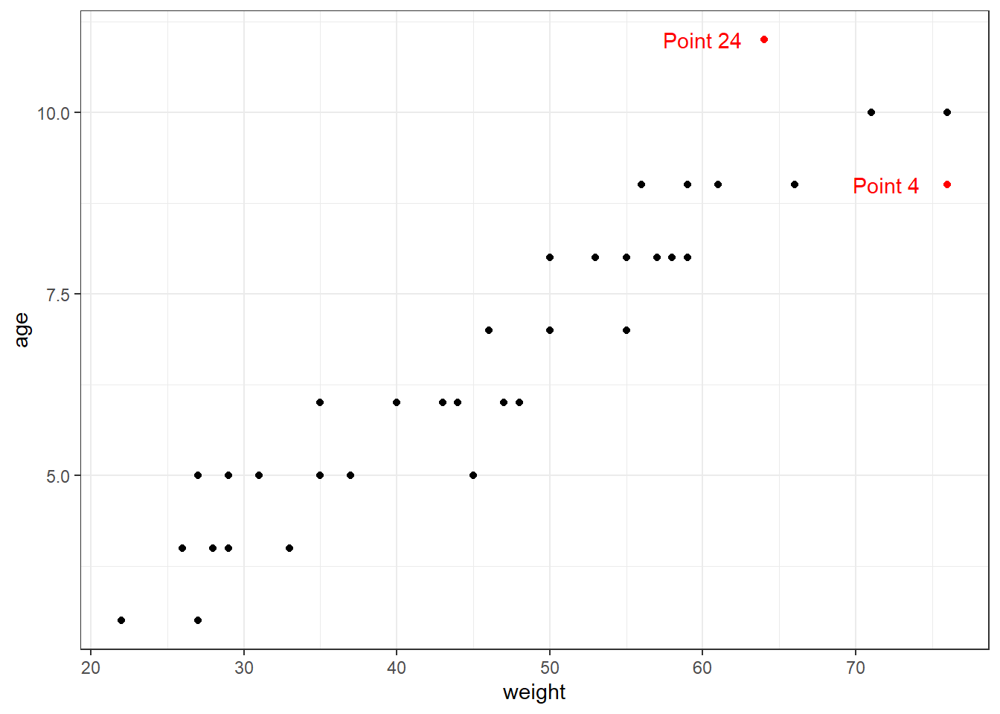
6.8 Outlier Diagnostics: Identifying Points with High Influence on the Model
A point in a regression model has high influence if the inclusion (or exclusion) of that point will have substantial impact on the model, in terms of the estimated coefficients, and the summaries of fit. The measure I routinely use to describe the level of influence a point has on the model is called Cook’s distance.
As a general rule, a Cook’s distance greater than 1 indicates a point likely to have substantial influence on the model, while a point in the 0.5 to 1.0 range is only occasionally worthy of investigation. Observations with Cook’s distance below 0.5 are unlikely to influence the model in any substantial way.
6.8.1 Assessing the Value of Cook’s Distance
You can obtain information on Cook’s distance in several ways in R.
- My favorite is model diagnostic plot 5 (the residuals vs. leverage plot) which uses contours to indicate the value of Cook’s distance.
- This is possible because influence, as measured by Cook’s distance, is a function of both the observation’s standardized residual and its leverage.
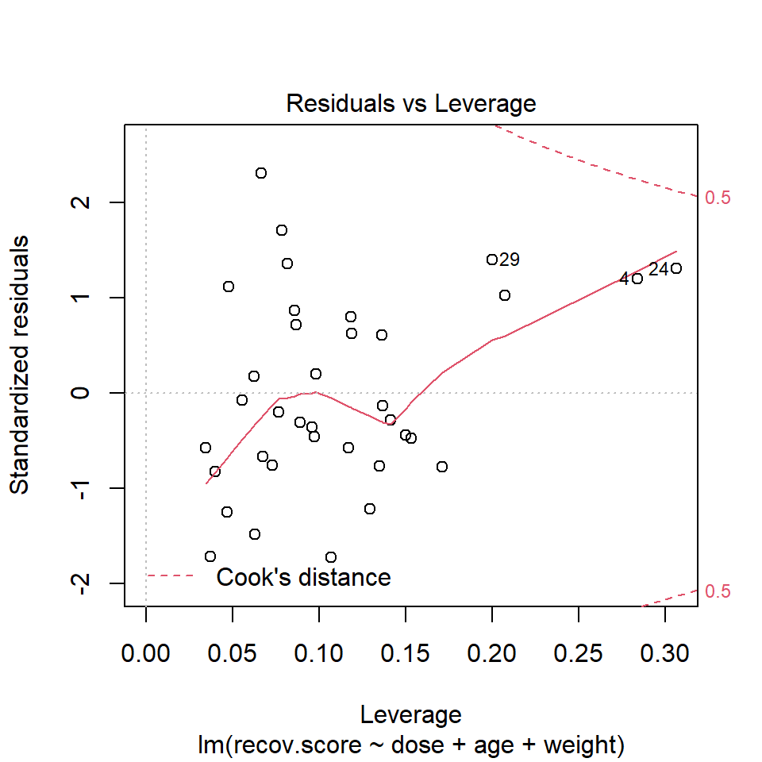
6.8.2 Index Plot of Cook’s Distance
Model Diagnostic Plot 4 for a linear model is an index plot of Cook’s distance.
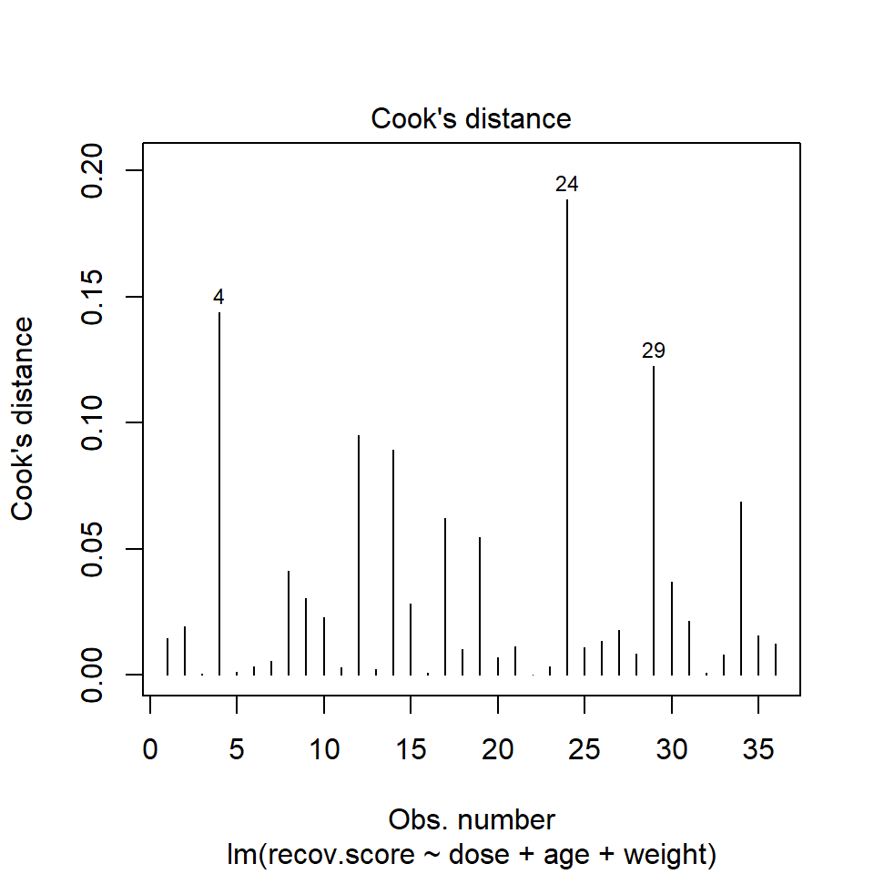
It is clear from this plot that the largest Cook’s distance (somewhere between 0.15 and 0.2) is for the observation in row 24 of the data set.
To see all of the Cook’s distances, we can simply ask for them using the cooks.distance function.
22 3 5 16 32 13 6 11 23 7 20 28 33
0.000 0.001 0.001 0.001 0.001 0.002 0.003 0.003 0.003 0.006 0.007 0.008 0.008
18 21 25 36 26 1 35 27 2 31 10 15 9
0.010 0.011 0.011 0.012 0.013 0.015 0.016 0.018 0.019 0.022 0.023 0.028 0.031
30 8 19 17 34 14 12 29 4 24
0.037 0.041 0.055 0.062 0.069 0.089 0.095 0.122 0.144 0.189 6.9 Running a Regression Model While Excluding A Point
Suppose that we wanted to remove row 24, the point with the most influence over the model. We could fit a model to the data without row 24 to see the impact…
Note that I have to specify the new data set as hydrate[-24,]: the comma is often forgotten and crucial.
Call:
lm(formula = recov.score ~ dose + age + weight, data = hydrate[-24,
])
Residuals:
Min 1Q Median 3Q Max
-16.070 -5.609 -2.329 6.939 23.618
Coefficients:
Estimate Std. Error t value Pr(>|t|)
(Intercept) 87.7981 6.1533 14.268 3.61e-15 ***
dose 5.8235 1.7896 3.254 0.00275 **
age -1.4131 2.5958 -0.544 0.59008
weight -0.3496 0.3517 -0.994 0.32791
---
Signif. codes: 0 '***' 0.001 '**' 0.01 '*' 0.05 '.' 0.1 ' ' 1
Residual standard error: 9.81 on 31 degrees of freedom
Multiple R-squared: 0.4808, Adjusted R-squared: 0.4305
F-statistic: 9.568 on 3 and 31 DF, p-value: 0.0001261Compare these results to those obtained with the full data set, shown below.
- How is the model affected by removing point 24?
- What is the impact on the slopes?
- On the summary measures? Residuals?
Call:
lm(formula = recov.score ~ dose + age + weight, data = hydrate)
Residuals:
Min 1Q Median 3Q Max
-16.682 -6.492 -2.204 7.667 22.128
Coefficients:
Estimate Std. Error t value Pr(>|t|)
(Intercept) 85.4764 5.9653 14.329 1.79e-15 ***
dose 6.1697 1.7908 3.445 0.00161 **
age 0.2770 2.2847 0.121 0.90428
weight -0.5428 0.3236 -1.677 0.10325
---
Signif. codes: 0 '***' 0.001 '**' 0.01 '*' 0.05 '.' 0.1 ' ' 1
Residual standard error: 9.923 on 32 degrees of freedom
Multiple R-squared: 0.4584, Adjusted R-squared: 0.4077
F-statistic: 9.03 on 3 and 32 DF, p-value: 0.0001769While it is true that we can sometimes improve the performance of the model in some ways by removing this point, there’s no good reason to do so. We can’t just remove a point from the data set without a good reason (and, to be clear, “I ran my model and it doesn’t fit this point well” is NOT a good reason). Good reasons would include:
- This observation was included in the sample in error, for instance, because the subject was not eligible.
- An error was made in transcribing the value of this observation to the final data set.
- And, sometimes, even “This observation is part of a meaningful subgroup of patients that I had always intended to model separately…” assuming that’s true.
6.10 Summarizing Regression Diagnostics for 431
Check the “straight enough” condition with scatterplots of the y variable (outcome) against each x-variable (predictor), usually via the top row of a scatterplot matrix.
If the data are straight enough (that is, if it looks like the regression model is plausible), fit a regression model, to obtain residuals and influence measures.
- If not, consider using the Box-Cox approach to identify a possible transformation for the outcome variable, and then recheck the straight enough condition.
The plot function for a fitted linear model builds five diagnostic plots.
[Plot 1] A scatterplot of the residuals against the fitted values.
- This plot should look patternless. Check in particular for any bend (which would suggest that the data weren’t all that straight after all) and for any thickening, which would indicate non-constant variance.
- If the data are measured over time, check especially for evidence of patterns that might suggest they are not independent. For example, plot the residuals against time to look for patterns.
[Plot 3] A scale-location plot of the square root of the standardized residuals against the fitted values to look for a non-flat loess smooth, which indicates non-constant variance. Standardized residuals are obtained via the
rstandard(model)function.[Plot 2] If the plots above look OK, then consider a Normal Q-Q plot of the standardized residuals to check the nearly Normal condition.
[Plot 5] The final plot we often look at is the plot of residuals vs. leverage, with influence contours. Sometimes, we’ll also look at [Plot 4] the index plot of the Cook’s distance for each observation in the data set.
- To look for points with substantial leverage on the model by virtue of having unusual values of the predictors - look for points whose leverage is at least 2.5 times as large as the average leverage value.
- The average leverage is always k/n, where k is the number of coefficients fit by the model (including the slopes and intercept), and n is the number of observations in the model.
- To obtain the leverage values, use the
hatvalues(model)function. - To look for points with substantial influence on the model, that is, removing them from the model would change it substantially, consider the Cook’s distance, plotted in contours in Plot 5, or in an index plot in Plot 4.
- Any Cook’s d > 1 will likely have a substantial impact on the model.
- Even points with Cook’s d > 0.5 may merit further investigation.
- Find the Cook’s distances using the
cooks.distance(model)function.
- To look for points with substantial leverage on the model by virtue of having unusual values of the predictors - look for points whose leverage is at least 2.5 times as large as the average leverage value.
- The average leverage is always k/n, where k is the number of coefficients fit by the model (including the slopes and intercept), and n is the number of observations in the model.
- To obtain the leverage values, use the
6.11 Back to hydrate: Residual Diagnostics for Dose + Weight Model
In class, we’ll walk through all five plots produced for the DW model (the model for hydrate recovery score using dose and weight alone).
- What do these 5 plots tell us about the assumption of linearity?
- What do these 5 plots tell us about the assumption of independence?
- What do these 5 plots tell us about the assumption of constant variance?
- What do these 5 plots tell us about the assumption of Normality?
- What do these 5 plots tell us about leverage of individual observations?
- What do these 5 plots tell us about influence of individual observations?
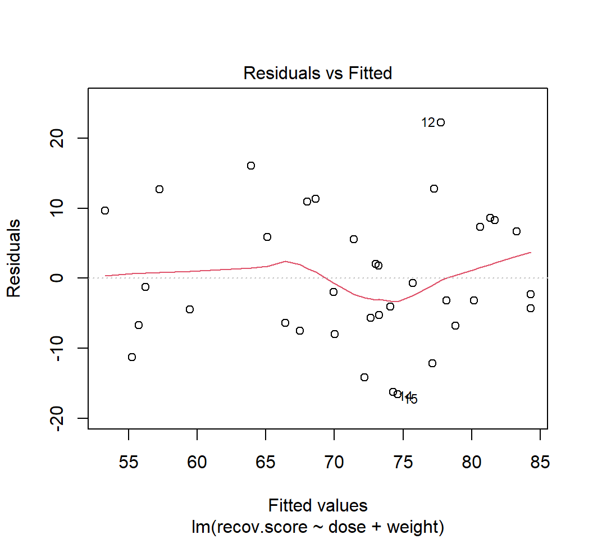
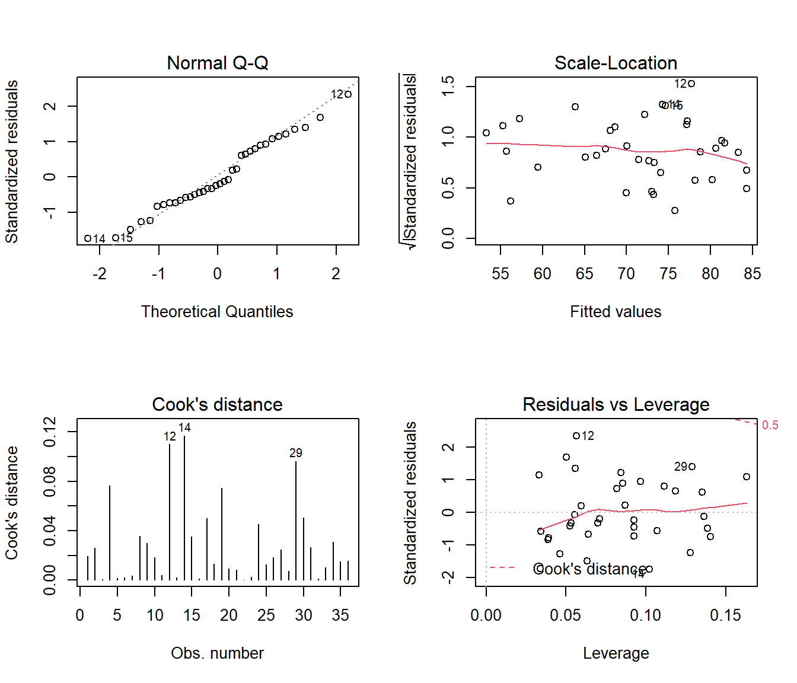
6.12 Violated Assumptions: Problematic Residual Plots?
So what do serious assumption violations look like, and what can we do about them?
6.13 Problems with Linearity
Here is a simulated example that shows a clear problem with non-linearity.
set.seed(4311); x1 <- rnorm(n = 100, mean = 15, sd = 5)
set.seed(4312); x2 <- rnorm(n = 100, mean = 10, sd = 5)
set.seed(4313); e1 <- rnorm(n = 100, mean = 0, sd = 15)
y <- 15 + x1 + x2^2 + e1
viol1 <- data.frame(outcome = y, pred1 = x1, pred2 = x2) %>% tbl_dfWarning: `tbl_df()` is deprecated as of dplyr 1.0.0.
Please use `tibble::as_tibble()` instead.
This warning is displayed once every 8 hours.
Call `lifecycle::last_warnings()` to see where this warning was generated.
In light of this, I would be looking for a potential transformation of outcome. Does the Box-Cox plot make any useful suggestions?

Estimated transformation parameter
Y1
0.4414775 Note that if the outcome was negative, we would have to add some constant value to every outcome in order to get every outcome value to be positive, and Box-Cox to run. This suggests fitting a new model, using the square root of the outcome.

This is meaningfully better in terms of curve, but now looks a bit fan-shaped, indicating a potential problem with heteroscedasticity. Let’s look at the scale-location plot for this model.

This definitely looks like there’s a trend down in this plot. So the square root transformation, by itself, probably hasn’t resolved assumptions sufficiently well. We’ll have to be very careful about our interpretation of the model.
6.14 Problems with Non-Normality: An Influential Point
With 100 observations, a single value with a standardized residual above 3 is very surprising. In our initial model.1 here, we have a standardized residual value as large as 6, so we clearly have a problem with that outlier.

Should we, perhaps, remove point 72, and try again? Only if we have a reason beyond “it was poorly fit” to drop that point. Is point 72 highly leveraged or influential?

What if we drop this point (72) and fit our linear model again. Does this resolve our difficulty with the assumption of linearity?
model.1.no72 <- lm(outcome ~ pred1 + pred2, data = viol1[-72,])
par(mfrow=c(1,2))
plot(model.1, which = 1, caption = "With Point 72")
plot(model.1.no72, which = 1, caption = "Without Point 72")
No, it doesn’t. But what if we combine our outcome transformation with dropping point 72?
model.2.no72 <- lm(sqrt(outcome) ~ pred1 + pred2, data = viol1[-72,])
par(mfrow=c(1,2))
plot(model.2.no72, which = c(1,3))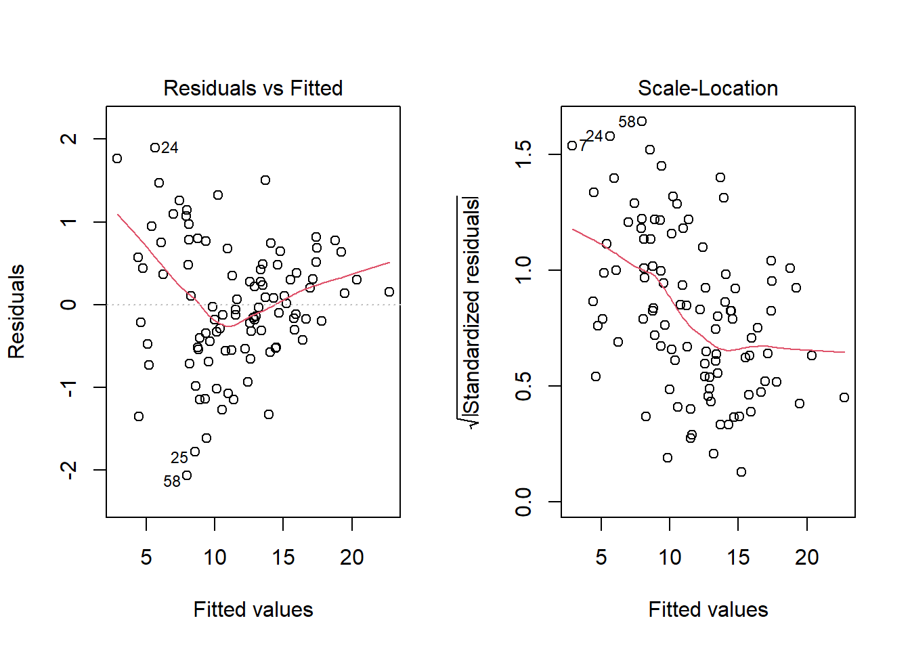
Nope. That still doesn’t alleviate the problem of heteroscedasticity very well. At least, we no longer have any especially influential points, nor do we have substantial non-Normality.

At this point, I would be considering potential transformations of the predictors, quite possibly fitting some sort of polynomial term or cubic spline term in the predictors, but I’ll leave that for discussion in 432.
6.15 Problems with Non-Normality: Skew
set.seed(4314); x1 <- rnorm(n = 100, mean = 15, sd = 5)
set.seed(4315); x2 <- rnorm(n = 100, mean = 10, sd = 5)
set.seed(4316); e2 <- rnorm(n = 100, mean = 3, sd = 5)
y2 <- 50 + x1 + x2 + e2^2
viol2 <- data.frame(outcome = y2, pred1 = x1, pred2 = x2) %>% tbl_df
model.3 <- lm(outcome ~ pred1 + pred2, data = viol2)
plot(model.3, which = 2)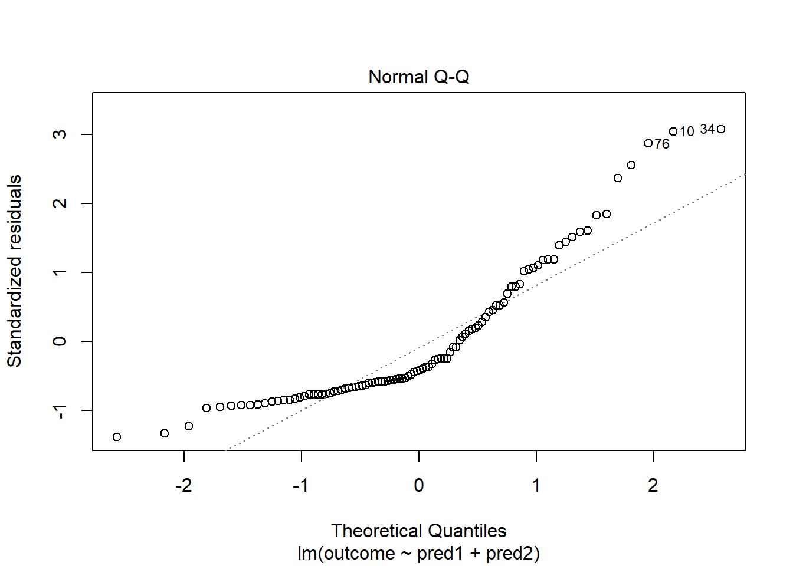
Skewed residuals often show up in strange patterns in the plot of residuals vs. fitted values, too, as in this case.
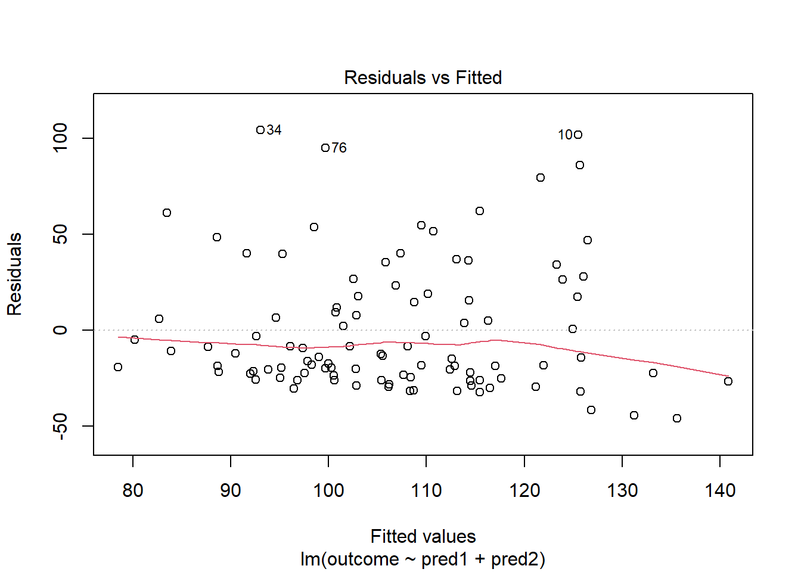
Clearly, we have some larger residuals on the positive side, but not on the negative side. Would an outcome transformation be suggested by Box-Cox?
Estimated transformation parameter
Y1
-1.438747 The suggested transformation is either the inverse or the inverse square of our outcome. Let’s try the inverse.

OK. That’s something of an improvement. How about the other residual plots with this transformation?
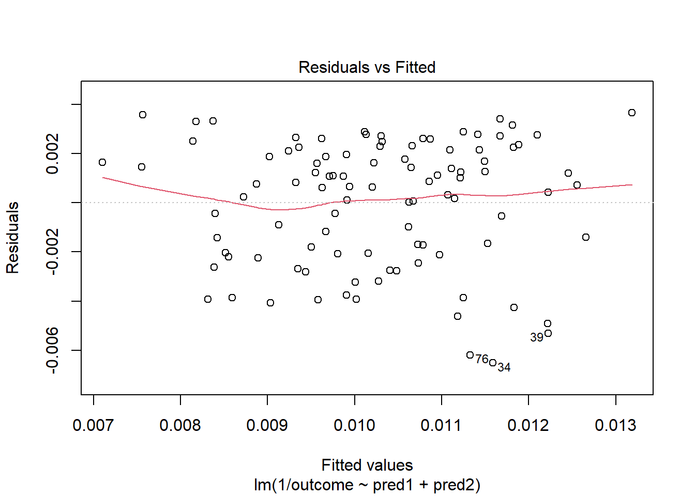
The impact of the skew is reduced, at least. I might well be satisfied enough with this, in practice.
References
Bock, David E., Paul F. Velleman, and Richard D. De Veaux. 2004. Stats: Modelling the World. Boston MA: Pearson Addison-Wesley.